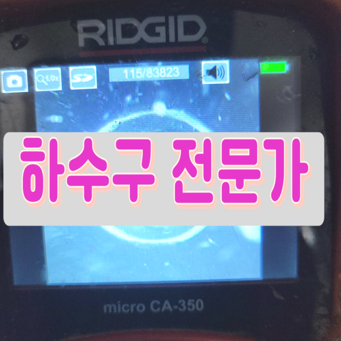
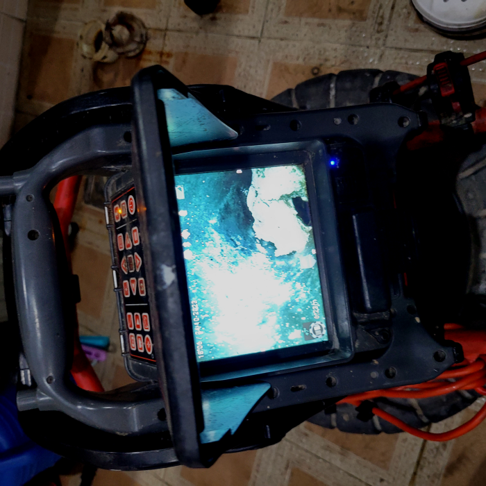
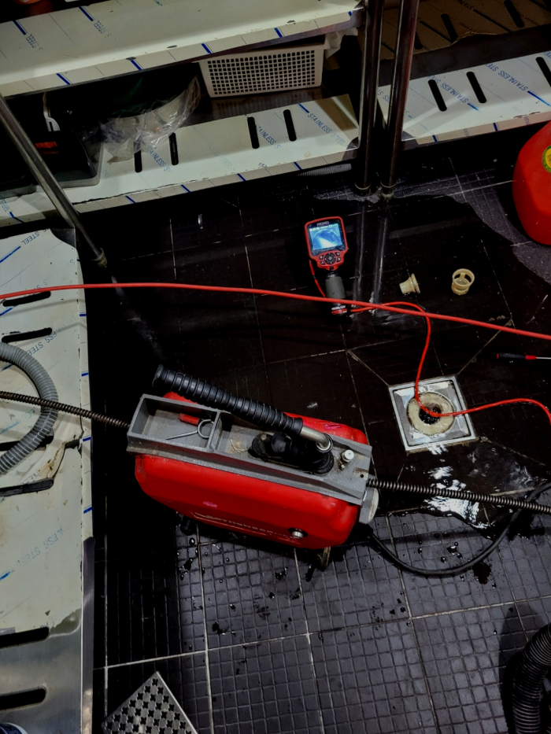
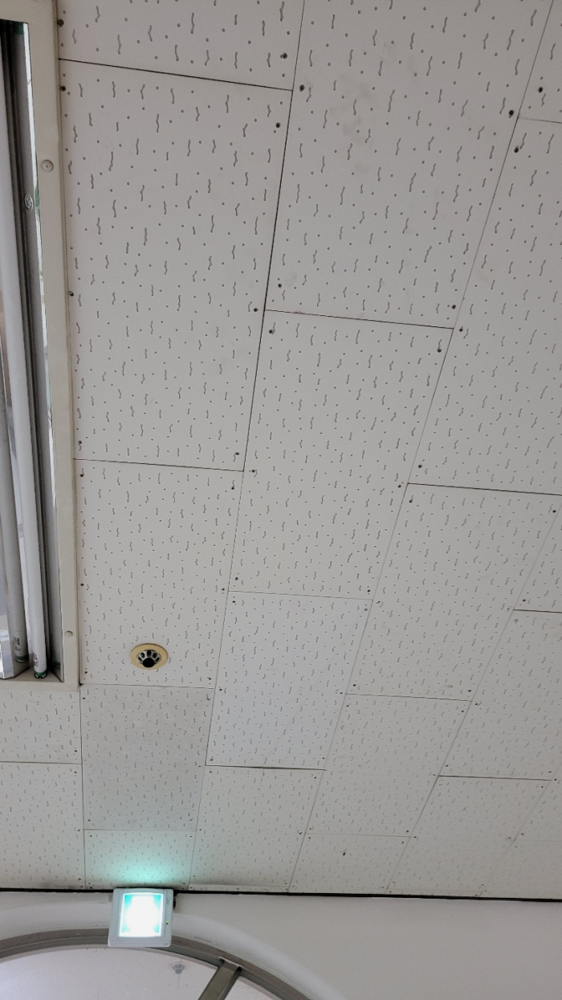
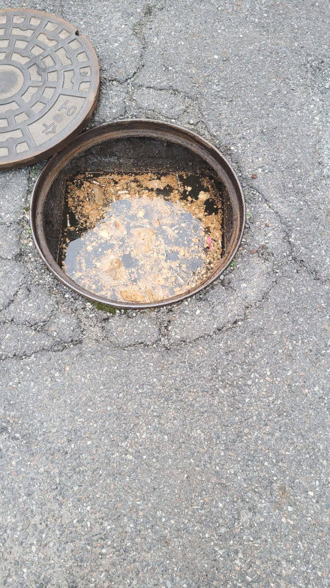
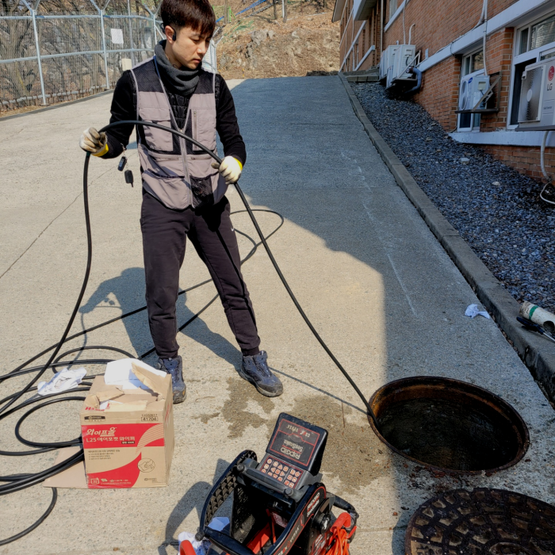
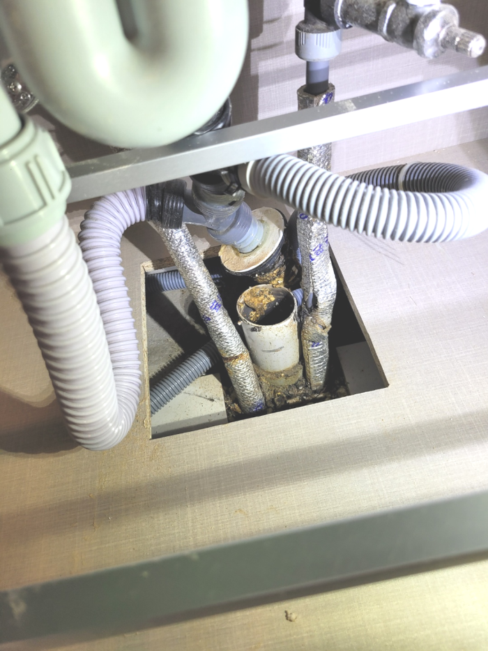

🏠 이천 장호원 배수관막힘 감곡면 하수구역류 배수구뚫는업체
용인 싱크대막힘 전문 시공 후기

📋 작업 개요
- 위치: 용인
- 서비스 유형: 싱크대막힘, 변기막힘, 하수구막힘, 배관막힘, 역류해결, 뚫는업체, 배관청소, 고압세척
- 작업 일시: 2024. 1. 31. 12:31
- 업체명: 하수구수사대 (010-5615-2118)
🔍 문제 상황
반갑습니다!
설비전문업체 "하수구수사대"를 찾아주셔서 고맙습니다.
배관속에 사용했던 들어오면 괜찮지만 물 뿐 아니라 오만 이물질이 함께 흘러 들어가기때문에 이것을을 제대로 처리해줘야 합니다. 관으로 들어가버린 다양한 종류의 갖은 잡다한 물질들이 외부로 배출되지 못하면 배출구막힘증상이 나타날수 있어요.
이천 장호원 배수관막힘 감곡면 하수구역류 배수구뚫는업체

🔎 원인 분석
💡 전문가 진단: 이천 장호원 배수관막힘 감곡면 하수구역류 배수구뚫는업체
이번 현장에서는 샤프트 장비로 퇴수구 내부를 스케일링해주는 작업을 하고 석션기로 백시멘트 조각들을 빨아들여서 꺼내면 모든 시공이 마무리되는 과정이었습니다. 백시멘트 이외에도 각종 모래와 분진 등이 많이 있었는데요.
얼마 전 다녀왔던 현장은 혼자서 퇴수뚫어보시려다가 한참을 노력해도 해결이 되지 않아 전문 업체를 찾게 되셨다고 하는데요. 방문 드렸던 현장은 자주 막힘 증상이 보였던 곳이고 뚫은지 얼마 안 된 상태에서 또다시 문제가 발생해 확실한 해결을 원하셨습니다.
해당 업계에서는 어정쩡한 배관 기사도 방문하는 경우가 많은데 저희 업체에서는 오랜 경력의 베테랑들로만 구성 중이 있는데 이러한 이유는 초심자가 작업할 경우 이해도 자체가 당연히 부족하여 상황 판단부터 배수구뚫음까지도 어려울 수 있기 때문입니다.
예전에는 아무래도 전문장비가 없으면 배수구 막힘을 발생하면 배수관을 다 틀어내서 큰 송사를 해야 하는 경우가 많았는데요. 그렇기에 많은 고객님들이 번거롭고 부담스럽다는 생각을 하실수 있었던 곳입니다. 하지만 이제는 배수관전문장비를 활용해서 신속하게 문제를 해결할수 있어서 많이 좋았습니다.
이러한 퇴수구작업을 진행하는 곳은 많지 않기에 사전에 견적을 어느 정도 받아보시는 것을 추천드립니다. 그리고 고압세척 장비는 매우 고가 장비기에 이러한 장비를 갖고 있는 업체도 드물고 최신의 장비인지도 확인하고 의뢰하시는 게 좋을 것 같아요.

🔧 작업 과정
다 똑같은퇴수 배관이 아니라 건물마다 형태와 길이나 넓이 등이 다르기 때문에 문제 발생 부위와 막힘의 정도를 가려내어 유용한 도구를 상황에 맞게 사용하는 센스가 필요합니다. 퇴수업체마다 오랜 시간 다양한 현장을 경험하며 쌓은 지식이 다르므로 어려움이 생긴 부분을 정확히 짚어내고 이에 맞는 기기를 선택해 기술적으로 노련하게 다룰 줄 알아야 합니다.
이와같은경우에 다시 배관 안쪽 부분에 잔해물들이쌓이며 재발문제를야기시키죠 저희들은 혹여다른 베테랑들이방문해 성공하지못한경우라도 사양않고 오로지문제 해결만을위해 불러주시면 달려가고있습니다
스스로해결이되는 상황이였으면 배수 전문기사는있지도 않았을겁니다.배관에있는 석회들은 물에는녹지못하고 안타깝지만 시간이가면갈수록 지속적으로 누적되어서 상황이심각해지게됩니다.
이러한것이 어렵다면은 저번에얘기 해드린것처럼 무엇때문에하수도 막혀버리는것인지 확인할수있는방법이 거의없다고 보시면됩니다.엄청좁은공간을 운으로만 해결하는건 불가능합니다.전문기술을갖추신 실력자라면 최첨단장비없이 출동이불가능합니다.
저희 업체는 수시로 고객님들께 출동 건에 대한 후기들을 들려드리고 있으며, 많은 배수구막힘 고객님들께서 다시금 찾아주시는 경우도 있고, 확실한 일 처리로 많은 사랑을 받고 있습니다.
저희는 빠르게 현장으로 출동하여 배출관 입구를 열어서 확인해 봤습니다. 이 배관은 전체적으로 석회가 생겨서 셀프로 이물질들을 모두 뚫었다고 한들 비슷한 문제가 재발할 만한 상황이었습니다.
이름에서도 알 수 있듯이 굉장히 높은 수압으로 이물질 찌꺼기들을 빠르게 분쇄하는 작업인데요. 유입된 이물질의 양이 실내보다 더 많고 배수배관 또한 견고한 실외에서는 특히 더 효과적인 방법입니다. 10미터 넘는 긴 구간을 꼼꼼히 살펴보면서 세척을 해주었으며 중간에 이물질도 외부로 제거해 줍니다.


✅ 작업 완료
구석구석 살펴본 뒤 조치하지 않으면 기름때들은 쌓이기만 하면서 예상치 못한 증상까지도 만드는 것입니다. 이렇기 때문에 배수구작업을 하게 되면 어떤 현장이든지 전체 구간 세척작업하고 있습니다.
#하수구막힘 #하수구뚫음 #하수구역류 #씽크대막힘 #싱크대역류 #오수관막힘 #하수구청소 #욕실하수구막힘 #변기막힘 #하수구뚫는비용 #싱크대수리 #화장실막힘




⚠️ 주방 싱크대 배관 막힘 예방 수칙
- ✅ 기름기가 묻은 식기나 프라이팬은 설거지 전 키친타올로 반드시 기름때를 닦아내세요.
- ✅ 주기적으로 싱크대 개수대에 뜨거운 물을 가득 받아 한 번에 내려 배관 내부 기름을 씻어내세요.
- ✅ 배수구 거름망을 미세한 필터로 사용하시고 음식물 찌꺼기가 틈으로 새어 들지 않게 관리하세요.
- ✅ 베이킹소다와 식초를 뜨거운 물과 함께 일주일에 한 번씩 부어주면 배관 살균과 막힘 예방에 좋습니다.
💡 핵심 정리
- 확실한 장비 작업(내시경 점검 및 샤프트 스케일링)으로 원인을 뿌리 뽑습니다.
- 작업 후 1년 이내에 동일한 부위 재발 시 100% 무상 A/S 서비스를 보장합니다.
- 서울 · 경기 · 인천 전 지역에 24시간 언제든 긴급 출동할 수 있도록 항시 대기 중입니다.
❓ 자주 묻는 질문 (FAQ)
🚨 용인 싱크대막힘 문제로 고민이신가요?
정확한 원인 진단과 확실한 시공으로 재발 없는 해결을 약속드립니다.
24시간 긴급 출동 | 서울 · 경기 · 인천 전지역 | 1년 내 재발 시 무상 A/S